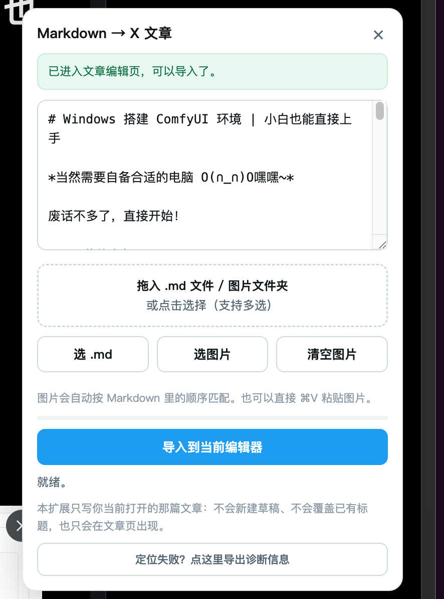

下载并解压
下载最新 ZIP，解压到一个固定文件夹。压缩包内就是可加载的扩展程序。
下载 md2xarticle.zip标题、正文、图片，一次导入。只写入你当前打开的那篇文章，不新建草稿，不覆盖已有标题。

Install
下载最新 ZIP，解压到一个固定文件夹。压缩包内就是可加载的扩展程序。
下载 md2xarticle.zip打开扩展管理页，开启「开发者模式」，点「加载已解压的扩展程序」，选择含 manifest.json 的文件夹。
chrome://extensions
Edge edge://extensions
Arc arc://extensions
Use
访问 x.com/compose/articles，手动新建一篇文章，或打开已有草稿。
看到标题框和正文编辑区后，点击「↑ 导入 Markdown」。
可以直接粘贴 Markdown，也可以拖入 .md、图片或整个文章文件夹。
点「导入到当前编辑器」，等待进度完成。X 会自动保存。
Help
按钮只会出现在 X 的文章页面。先访问 x.com/compose/articles，进入文章列表或编辑页。
先在 X 里手动新建一篇文章，看到标题框和正文输入区后，再点插件按钮。
检查图片是否过大或格式异常。插件会重试，重新导入一次通常可以解决。
部分图床有防盗链限制。把图片下载到本地，再和 Markdown 一起拖进面板即可。